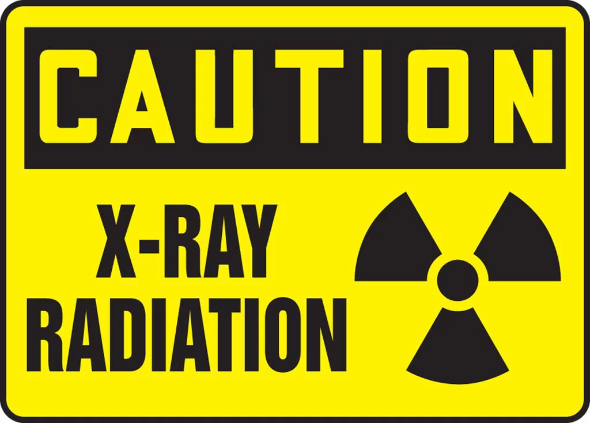

X-ray Risks 
Imagine a visit to the doctor's office for a health concern, and they suggest an X-ray to get a closer look inside your body. These X-ray exams have become a crucial part of modern medicine, providing invaluable information about our health. What's reassuring is that these procedures usually use very small amounts of radiation, which doctors believe are safe for patients. However, when it comes to understanding the potential risks associated with this low-dose radiation, it's a bit like solving a puzzle – complex and full of nuances. To be especially careful rather than taking a risk or making a mistake, healthcare professionals tend to assume that every X-ray, regardless of how minimal the radiation dose might be, carries a certain level of radiation risk. This cautious approach is like taking extra safety measures to make sure everything goes smoothly.
X-rays is like a double-edged sword; on one hand, they can potentially damage our DNA, increase the risk of cancer if we get exposed too often, and their effects can vary from person to person. Pregnant women need to be extra cautious, as X-rays can harm developing babies. In extreme cases, high doses of X-rays can even cause immediate tissue damage and hair loss. Sometimes, X-rays may lead to misdiagnoses or trigger unnecessary medical procedures. There's also the rare chance of allergic reactions to the contrast agents used in some X-ray tests. To stay on the safe side, it's crucial for healthcare professionals to carefully consider the risks and benefits of using X-rays and to use them sparingly and responsibly while keeping radiation doses as low as possible.
When it comes to reducing radiation exposure from X-rays, you and your healthcare team both have important roles to play. Here's what you can do, as recommended by the FDA (Food and Drug Administration): First off, don't hesitate to ask your healthcare provider how an X-ray will specifically benefit your diagnosis or treatment. It's entirely okay to inquire if there are alternative procedures with lower radiation risks that can still provide valuable insights into your medical condition. While it's crucial not to decline an X-ray if your doctor deems it medically necessary, it's equally important not to insist on one if they believe it's unnecessary. Communication is key here. When it comes to dental X-rays, consider asking your dentist about using faster-speed film options, which offer similar benefits but with less radiation exposure. And for families, keeping a record of your X-ray history can be incredibly helpful. It's a bit like keeping a list of your medications when you visit the doctor – it helps avoid unnecessary duplications and ensures everyone gets the right care. So, together with your healthcare team, you can make sure that when X-rays are needed, they're used safely and effectively to benefit your health.
Made on 11th of October 2023